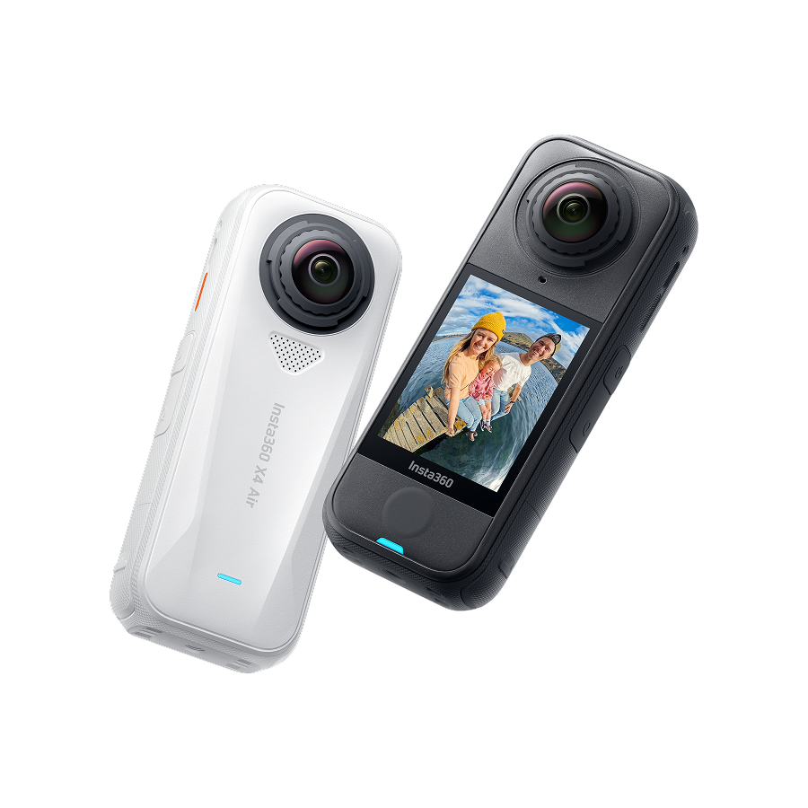

جولة افتراضية 360°
جولة داخلية تفاعلية مدمجة مع بيانات الوحدة.
عرض المشروع
خبرة عملية في تصوير و تطوير الجولات الافتراضية للمنشآت القائمة بمختلف أنواعها. أركز على الدقة التقنية والوضوح البصري مع تخطيط مسبق لمسارات الحركة داخل الوحدات السكنية والمساحات التجارية لضمان تجربة مستخدم سلسة واحترافية تدعم الأهداف التسويقية للمشروع.
تصوير احترافي بتقنيات 360 درجة يشمل اختيار المواضع، التعريض الصحيح وتنظيم المشاهد للحصول على لقطات سلسة للربط داخل الجولات.
إعداد الجولات باستخدام أدوات متقدمة (تحرير النقاط، إضافة وسوم معلوماتية، دمج الصوت والإضاءة) لتجربة تفاعلية غامرة.
دمج الجولات ضمن خرائط قوقل لتوسيع الوصول ورفع مصداقية المشروع عبر استعراضه داخل نظام الخرائط العالمي.
أقوم بتصوير المساحات باستخدام كاميرات 360 درجة ثم تطوير جولات افتراضية منظمة تتيح للمستخدم استكشاف المكان والتنقل بين نقاطه بسهولة. أعمل على ترتيب المشاهد وربطها بطريقة واضحة تعكس توزيع المساحات وتساعد على فهم الموقع قبل زيارته على أرض الواقع.
أقوم برفع الجولات الافتراضية وربطها بموقع المشروع على Google Maps، مما يتيح للمستخدم الوصول إلى الجولة مباشرة عند فتح موقع المكان على الخريطة. هذا التكامل يسمح للعميل باستكشاف الموقع والدخول إلى الجولة الافتراضية بسهولة ضمن بيئة الخرائط، ويزيد من وضوح المشروع وإمكانية اكتشافه عبر البحث الجغرافي.
جولة داخلية تفاعلية مدمجة مع بيانات الوحدة.
عرض المشروعجولة خارجية تفاعلية تُظهر البيئة الخارجية للمشروع.
عرض المشروعجولة افتراضية داخل احد المنازل بغرض الذكري
عرض المشروعجولة داخلية تفاعلية مدمجة من أحد المشاريع
عرض المشروع